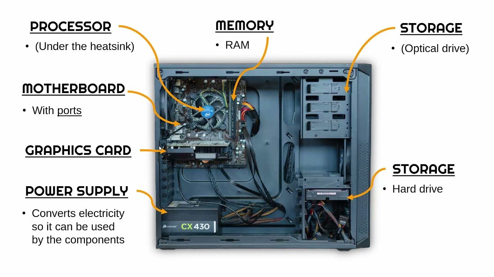
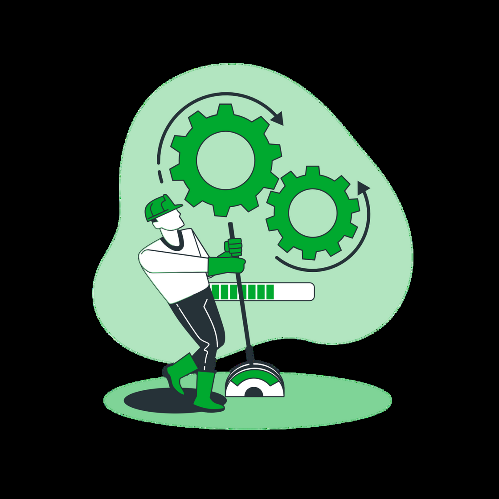
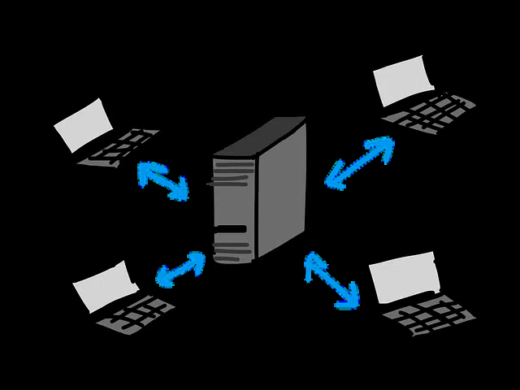
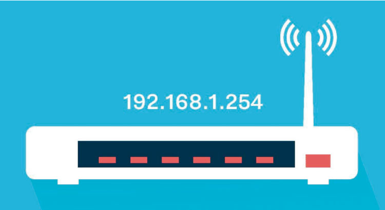
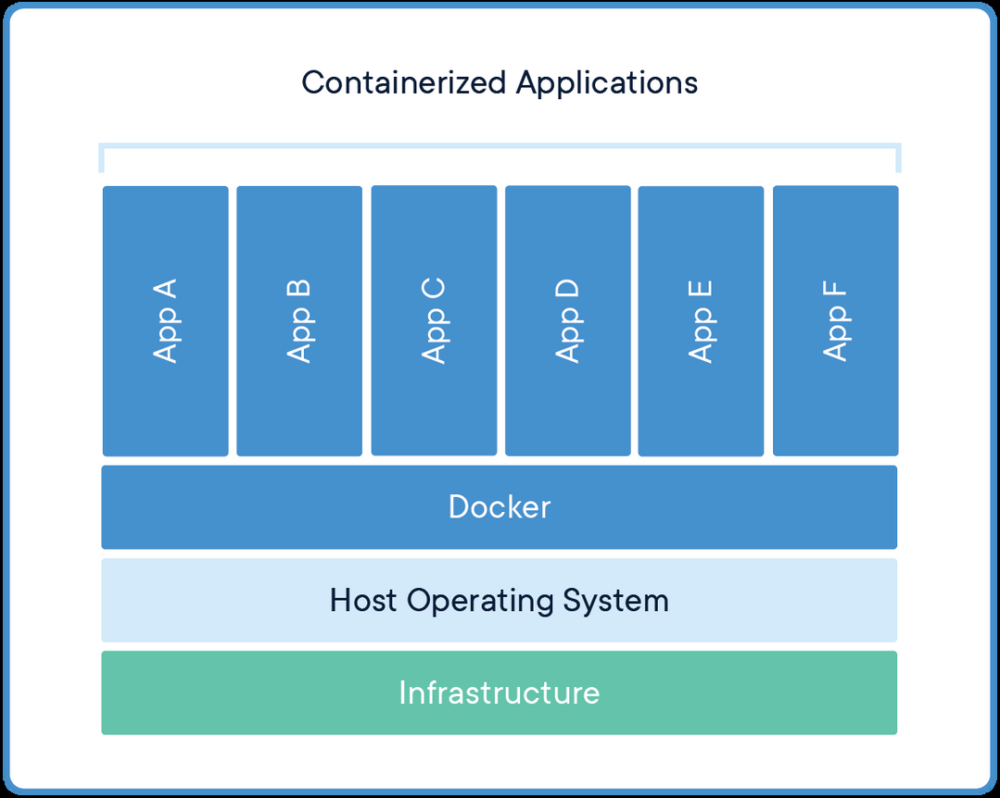
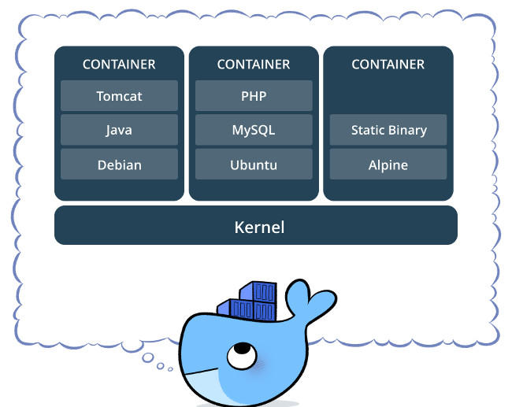

- .01Introducción a Docker
- .02Repaso previo: hardware, procesos y redes
- .03Contexto histórico: ¿Cómo corríamos software antes?
- .04Docker: Imágenes y Contenedores
- .05Cosas que solucionamos con Docker
- .06Manos a la obra: Comandos en vivo y el Coso Dockerizado
- ¿Qué es lo primero que piensan?
- ¿Lo usan?

Lo pasamos muy por arriba
- ¿Qué ven si escriben
topen sus terminales?

- ¿Qué cosas se acuerdan?
- ¿Jugaron Online?
- ¿Qué necesito para jugar con mis amigos?
- ¿Puedo jugar gratis?
- ¿En algunos casos anda mal?
Siguiendo el ejemplo anterior...
- ¿Cuáles son los clientes y cuál es el servidor?
- ¿Cómo se hablan?

¿Se acuerdan?

- ¿Suenan?
- ¿A qué nivel creen que se encuentran?
- ¿Cómo sabe mi computadora cuáles conexiones quieren hablar con el Minecraft?
Así como nuestra computadora puede tener muchos procesos, estos procesos hacen uso de puertos.
Quédense tranquilos que con la práctica lo vamos a dejar más en claro.
Después del intervalo vamos a hablar de Docker
- Un servidor por aplicación: Hace 25 años, si necesitabas una web y una base de datos, ponías una computadora física dedicada para cada una.
- Desperdicio de recursos: La gran mayoría de los servidores operaban al 5% o 10% de su capacidad total de CPU y memoria.
- Dependency Hell (El infierno de dependencias): Si intentabas meter varias apps en la misma máquina, actualizar una librería compartida podía voltear todos los demás servicios.
A principios de los 2000s explota el uso de Máquinas Virtuales (VMs) como VMware, VirtualBox y KVM:
- Permitieron consolidar múltiples servicios aislados en un mismo hardware físico.
- El costo oculto: Cada VM corre un Sistema Operativo completo (Guest OS) con su propio kernel virtualizado.
- Requieren gigabytes de disco para cada SO, gigabytes de RAM reservada fija y tardan minutos en arrancar.
Desarrollás en tu compu, todo anda joya. Se lo pasás a producción o a tu compañero y explota por diferencias de versiones o librerías.
— "Bueno... ¡entonces mandemos tu máquina a producción!"
¿Y si en vez de emular una computadora entera, aislamos los procesos adentro de Linux?
- chroot (1979): Enjaula el sistema de archivos de un proceso para que no vea el resto del disco.
- cgroups (Google, 2006): Control Groups para limitar y medir uso de CPU, RAM y disco de cada grupo de procesos.
- Namespaces (2002–2008): Aíslan la visión de procesos (PID), red (IP/puertos), usuarios y filesystems.
- 2013 — Nace Docker: Solomon Hykes presenta Docker en PyCon. Empaqueta estas tecnologías del kernel con imágenes en capas y democratiza los contenedores para todo el mundo.
Si yo les digo que se tienen que instalar Minecraft...
- ¿Por dónde arrancan?
- Necesitamos Java... ¿Qué versión? ¿Java 8, 17 o 21?
- ¿Y si otro proyecto requiere una versión incompatible?
Para este tipo de situaciones, nos viene a ayudar Docker.

Un container contiene el código y las dependencias necesarias para correr una aplicación de manera independiente.
Containers isolate software from its environment and ensure that it works uniformly despite differences for instance between development and staging.

Máquinas Virtuales (VMs)
- Virtualizan hardware mediante un Hypervisor.
- Cada VM corre un SO completo (Guest OS) con su propio kernel.
- Arranque lento: tardan minutos en bootear.
- Pesadas: gigabytes de RAM y disco fijos por máquina.
Contenedores (Docker)
- Comparten el Kernel del sistema operativo anfitrión.
- Aíslan únicamente el proceso, sus librerías y dependencias.
- Arranque casi instantáneo: levantan en milisegundos.
- Ultralivianos: consumen solo la RAM que usa el proceso.
Imagen (El Molde / La Receta)
- Plantilla estática e inmutable (sólo lectura).
- Como una receta, un plano de arquitectura o una clase en POO.
- Empaqueta: sistema base, runtime, código y dependencias.
- Se construye con un
Dockerfiley se comparte en Docker Hub.
Contenedor (La Instancia / El Proceso)
- Instancia viva en ejecución de esa imagen.
- Como la torta horneada, la casa construida o el objeto instanciado.
- Es un proceso real aislado con una capa delgada de lectura/escritura (R/W).
- Tiene estado: se puede iniciar, pausar, detener y destruir.
A partir de una única imagen base (ej: postgres o nginx):
- Podés levantar 1, 5 o 50 contenedores idénticos al mismo tiempo.
- Cada contenedor tiene su propia IP de red interna, sus propios puertos y memoria aislada.
- Si un contenedor falla o lo apagás, la imagen original no cambia y los demás contenedores siguen funcionando.
- Imágenes en capas (UnionFS): Cada instrucción del
Dockerfilegenera una capa inmutable. Si dos imágenes comparten capas, Docker las reutiliza y no gasta disco duplicado. - Capa de escritura efímera: El contenedor monta una capa temporal encima. Al destruir el contenedor, los cambios o archivos nuevos que escribió desaparecen.
- ¿Y si queremos guardar datos persistentes? Para eso usamos Volúmenes: carpetas del disco anfitrión vinculadas de forma segura al contenedor (clave para bases de datos o mundos de juegos).
El dolor sin Docker
- Sistemas de cámaras como MotionEye o Frigate (NVR con detección de objetos e IA).
- Requerían compilar FFmpeg con aceleración por placa de video y códecs especiales.
- Lidiar con librerías de OpenCV, drivers V4L2 del kernel y paquetes de Python específicos.
- Una actualización de tu distro podía romper la videovigilancia completa.
La solución con Docker
- Un solo comando empaquetado:
docker run -d --device=/dev/video0 -p 8765:8765 ccrisan/motioneye - Todo el software, drivers de video, servidor RTSP y panel web ya vienen testeados adentro.
- Levanta en 30 segundos sin tocar una sola librería de tu sistema operativo.
Millones de personas usan Docker en sus casas para montar servidores propios:
- Pi-hole / AdGuard Home: Servidor DNS que bloquea publicidad y rastreadores para todos los celulares, Smart TVs y computadoras conectadas al Wi-Fi de tu casa.
- Jellyfin / Plex: Tu propio Netflix privado para transmitir tus películas, fotos y música a cualquier pantalla sin pagar suscripciones.
- Home Assistant: Central domótica local para automatizar luces, enchufes y sensores sin que tus datos viajen a servidores extranjeros.
- ¿Tenés que hacer el TP con PostgreSQL, Redis o MySQL?
Antes: Descargabas un instalador que te creaba servicios en segundo plano, puertos ocupados y basura en el sistema.
Con Docker:docker run -d -p 5432:5432 postgres. Terminás la entrega, corrésdocker stopy tu compu queda 100% limpia. - Múltiples versiones conviviendo: ¿Un proyecto del laburo usa Node 16 y otro nuevo usa Node 22? ¿Python 3.7 vs Python 3.12? Con Docker corren a la vez en la misma máquina sin romperse.
Volviendo al ejemplo con el que arrancamos la clase...
- ¿Te acordás la pregunta de qué Java necesitabas? Con Docker no te importa si requiere Java 8, 17 o 21.
- Un solo comando descarga la versión exacta de OpenJDK y arranca el servidor:
docker run -d -p 25565:25565 -e EULA=TRUE itzg/minecraft-server - Podés pasarle el mundo entero a un amigo montando un volumen y le va a funcionar idéntico en su máquina.
hello-world$ docker run hello-world¿Qué pasó por detrás cuando diste Enter?
- 1. Búsqueda local: Docker revisó si ya tenías la imagen
hello-worlden tu máquina $\rightarrow$ no la encontró. - 2. Descarga desde Docker Hub: Se conectó automáticamente al registro público en internet y descargó la imagen.
- 3. Creación y aislamiento: Creó un nuevo contenedor con su propio espacio de procesos y memoria.
- 4. Ejecución: Corrió el programa empaquetado, que imprimió el saludo en tu terminal.
- 5. Finalización: Terminó su tarea y el contenedor se detuvo solo.
alpine sh$ docker run -it alpine sh-i(interactive) mantiene abierto el canal de entrada (stdin) para escribirle.-t(pseudo-TTY) le asigna una consola emulada para sentirla como una terminal real.
¡Estás adentro de un Linux independiente en 1 segundo! Probá correr adentro:
/ # cat /etc/os-release # Vemos la versión de Alpine Linux
/ # uname -a # ¡Muestra el kernel de tu computadora!
/ # hostname # El ID efímero asignado a tu contenedor
/ # exit # Salir y apagar el contenedornginx$ docker run -d -p 8080:80 --name mi-servidor nginx-d(detached): Corre en segundo plano. Tu consola queda libre al instante.-p 8080:80(puertos): Conecta el puerto 8080 de tu compu física con el puerto 80 interno de Nginx.--name mi-servidor: Le da un nombre amigable en lugar de un ID aleatorio.
👉 Abran el navegador en: http://localhost:8080
¡Un servidor web de producción corriendo en tu máquina sin haber instalado nada en tu sistema operativo!
# 1. Ver qué contenedores están corriendo AHORA
$ docker ps
# 2. Ver TODOS los contenedores (incluso los apagados como hello-world)
$ docker ps -a
# 3. Detener un contenedor en ejecución
$ docker stop mi-servidor
# 4. Eliminarlo definitivamente del disco
$ docker rm mi-servidor
Tip pro: Agregando --rm (ej: docker run --rm hello-world), el contenedor se destruye automáticamente apenas termina, sin dejar basura acumulada.
whalesay$ docker run --rm docker/whalesay cowsay "¡Aguante Intro Camejo!" ________________________
< ¡Aguante Intro Camejo! >
------------------------
\
\
\ ## .
## ## ## ==
## ## ## ## ===
/""""""""""""""""___/ ===
~~~ {~~ ~~~~ ~~~ ~~~~ ~~ ~ / ===- ~~~
\______ o __/
\ \ __/
\____\______/ Declarativamente usando un archivo de texto llamado Dockerfile:
FROM— Especifica la imagen base sobre la que arrancamos (ej.python:3.12-alpine).WORKDIR— Define el directorio de trabajo dentro del contenedor.COPY— Copia archivos desde nuestra computadora anfitriona hacia el contenedor.RUN— Ejecuta comandos durante la creación de la imagen (ej. crear usuarios o instalar paquetes).EXPOSE— Documenta el puerto en el que la aplicación escuchará conexiones.CMD— El comando que se ejecuta automáticamente cuando el contenedor arranca.
Agregamos un proyecto práctico al repo: ejemplos/coso-dockerizado
- Servidor Web nativo: Escrito en Python estándar sin dependencias externas pesadas.
- Aislamiento en vivo: Muestra el Hostname/ID efímero del contenedor, SO y uptime.
- Software para cámaras interactivo: Probador de webcam integrado en el navegador para capturar video y fotos desde el servicio dockerizado.
ejemplos/coso-dockerizado/
├── app.py # Servidor web interactivo
├── Dockerfile # Receta de la imagen
├── docker-compose.yml # Orquestación del servicio
└── README.md # Instrucciones de usoUn Dockerfile limpio y seguro siguiendo las mejores prácticas de la industria:
FROM python:3.12-alpine
WORKDIR /app
COPY app.py .
# Buenas prácticas: usuario sin privilegios root
RUN adduser -D cosouser && chown -R cosouser:cosouser /app
USER cosouser
EXPOSE 8000
CMD ["python", "app.py"]Para no tener que recordar flags largos en la consola, definimos el servicio en un archivo YAML:
services:
coso:
build: .
container_name: mi-coso-dockerizado
ports:
- "8000:8000"
restart: unless-stoppedEl mapeo "8000:8000" conecta el puerto de nuestra compu física con el puerto 8000 del contenedor.
# 1. Construir y levantar el Coso en un solo paso
$ docker compose up --build
# 2. Ver contenedores activos en la máquina
$ docker ps
# 3. Ver los logs de lo que pasa adentro del contenedor
$ docker logs -f mi-coso-dockerizado
# 4. Detener y limpiar los contenedores
$ docker compose down¡Listo! Abrís http://localhost:8000 y ya estás interactuando con tu contenedor.
- Linux: Docker Engine nativo (el más rápido y liviano de todos).
- Mac: Docker Desktop (o alternativas como OrbStack / Colima).
- Windows: WSL2 (Windows Subsystem for Linux) & Docker Desktop.
- Poder correr
docker run hello-world - Levantar nuestro Coso Dockerizado (en
ejemplos/coso-dockerizado) -
Responder las siguientes preguntas:
- —¿Qué es un volumen, para qué sirve?
- —¿Qué es docker-compose, para qué sirve?
- Levantar la web de la Materia con Docker
- Levantar servidor de Minecraft (Extra)
Ver para la clase que viene: